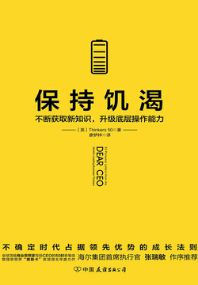

你正在使用无限卡阅读付费部分

保持饥渴：不断获取新知识，升级底层操作能力
Thinkers50
- 版权信息
- 前言
- 引言
- chapter one 预见趋势：拥抱不确定性
- 01 唯一确定的，就是不确定性
- 02 提高快速适应环境变化的能力
- 03 数字化时代
- 04 人工智能
- 05 趋势，是新时代给予小人物的机会
- 06 创造未来，你需要做什么
- 07 “她经济”时代，得女人者得天下
- 08 新时代企业变革面临的两个问题及应对策略
- chapter two 洞察组织：网络协同方向发展
- 09 不断消失的边界
- 10 恢复对市场的信心
- 11 企业管理的人性化趋势
- 12 文化是结果，不是方法
- 13 最简单的往往是最奏效的
- 14 战术上的勤奋和战略上的优化同步推进
- 15 区块链革命
- chapter three 创新策略：理解创造性破坏
- 16 引入创新想法，输出闲置的点子
- 17 判断力是创新的驱动力
- 18 要紧跟时代，万事俱备，才能成功
- 19 引领创新的三种关键能力
- 20 颠覆者的“饿狼精神”
- 21 软实力是竞争对手最难复制的
- 22 不，创新救不了你，但是可恶的问题可能会
- chapter four 打磨思维：每一种认知都自带缺陷
- 23 反思目标
- 24 深度思考：不断逼近问题的本质
- 25 十倍增长的想法
- 26 如何在不确定的环境下做出有效决策
- 27 你是有选择的
- chapter five 刻意练习：正确的事重复做，剩下的交给概率
- 28 不要试图证明自己的正确
- 29 不停地逼迫自己逃离舒适区
- 30 灰度认知，黑白决策
- 31 领导力的转变
- 32 会赚钱，敢花钱，分好钱
- 33 要事优先
- chapter six 自我管理：管理自己才能影响他人
- 34 影响力
- 35 反思的力量
- 36 对未来持乐观态度
- 37 让每个员工得以选择自己的领导人
- 38 自我赋能
- 39 敢于犯正确的错误
- chapter seven 保持饥渴：不断获取新知识，升级底层操作系统
- 40 停止傲慢，留住年轻职业女性
- 41 将顾客当作磁石
- 42 培养全球视野，做世界型公民
- 43 从正确地做事到做正确的事
- 44 变雇佣关系为合作关系
- 45 激发潜能、搞定大事的连接思维
- 46 面对复杂决定时，认真对待你的直觉思维
- 47 职场女性需要雌雄同体
- 48 培养不可替代的“唯一性”
- 49 不断获取新知识，培养超强的学习能力
- 50 不忘初心，保持对成功的渴望
- 保持饥渴有“饿狼精神”闻到味道敢上见到肉敢吃
前言
中国文化注重人与人之间的关系，印度文化注重自己与自己之间的关系，而西方文化注重人与自然之间的关系。
chapter one 预见趋势：拥抱不确定性
预见趋势：拥抱不确定性01 唯一确定的，就是不确定性
要应对这一挑战，我们需要进行“双重转型”。转型A将提高现今企业的相关性和弹性。Adobe公司将核心商业从售卖打包软件转型成提供在线即时服务；喜利得公司的业务从售卖工具转型成提供工具使用方法。转型B是创造明日发展的动力。亚马逊公司提升IT产品的力量，并将这股力量转化为价值几十亿美元的网络云服务；而雀巢正在打造一个代表健康的商业形象。
掌握双重转型需要：·选择的勇气。在转型信号清晰之前，鼓起勇气选择。转型信号越清晰，转型就越难做到，这是矛盾之处。·专注的明确。清楚要专注在明天的发展机会，即使这意味着摒弃过去商业的重要部分。·探索的好奇心。在重大的不确定面前，保持探索的好奇心，尝试着处理不可避免的错误步骤，是的，失败会伴随新方向而来。·坚持的信念。重要执行人质疑你的忠诚性，今日现状和明日发展冲突不断，定位问题使发展出现阻碍或者偏离，在这样黑暗的日子里，你要保持坚定的信念。
02 提高快速适应环境变化的能力
提高快速适应环境变化的能力
和你的大多数竞争者一样，你希望你的公司更加灵活机动，就像常常在商业杂志上露面的硅谷新兴企业一样。我们的建议是，提高战略灵活性，也就是提高快速适应商业环境变化的能力，这是你目前面临的最重要也是最大的挑战。
为什么大公司里所有事情都费时不少？我们看到了两个相关的问题。一个是官僚制度的无形钳制力——每件事都要依据规定才能完成。当然，规定不都是错的。这些管理程序都是由一群心怀好意的人经过深思熟虑后制定的，只不过这些制度后来逐渐违背了初衷。它们转而用来应付所有的不测，与公司整体目标的联系越来越薄弱。
在商场上，就是要把目标分解为小任务，不断尝试，对市场进行测试，并对市场反馈做出迅速反应。
互联网正朝着灵活趋势发展，它的混战方法正是我们所说的临时委员会策略。其他例子还包括超越预算制度。
你必须摒弃以往权力的来源，提拔那些敢于改变现状的人。
03 数字化时代
真正的机会在于更加了解市场且重构企业模型，从而更好地服务企业的合作方和顾客。
每个以用户为中心的企业都有一个核心用户行为，它推动着企业为用户创造价值。我们看看脸书（Facebook）这类的企业便明白为什么这么说了。信息交互是脸书的核心用户行为，推动着该企业的商业模型。通过核心用户行为创造的数据和价值将产生更大的利润。高额利润反过来增强企业对核心用户行为的管理和经营。世界上以用户为中心的最成功的公司，其商业模型都受到这种良性循环的推动。一个企业要获得数字化改革的成功，需要重构商业模型，将以资源为中心的模型转变为以用户为中心的商业模型。
首先，从以资源为中心到以用户为中心的转变必须成为战略重心。作为首席执行官的你必须不断推进这项转变。不少企业在营销总监或者信息主管领导下进行数字化改革。在营销总监领导下的改革往往由外到内，更多的是专注于用户参与而非商业模式改革；在信息主管领导下的改革则由内及外，专注于基础设施的整合以达到提高程序效率的目的。以上两种改革方法都无法对战略产生直接影响。要使企业进入数字化时代，你要确保数字化改革成为战略重点，并不断推动，以此将由外到内和由内及外的策略整合起来，最终完成公司的变革。这个过程中，用户参与度需要提高，数字化基础设施也需要整合，这样才能打造以用户为中心的商业模型。第二，首席执行官必须改变衡量对象，对象应是核心用户行为，而不是核心资产的使用情况。以用户为中心的商业模型将赢利与核心用户行为的管理捆绑在一起。
第三，企业的管理模式必须从只关注企业本身到关注整个大环境。传统管理模式完全盯着企业内部管理。在你保持开放态度和积极参与外部活动时，你将不得不延伸你的管理范围，以此来加强与合作方和用户的互动。
05 趋势，是新时代给予小人物的机会
趋势，是新时代给予小人物的机会
通用电气可借鉴的地方在哪？首先，要有“以终为始”的观念，从将来的立场往回看，而不是从现在往以后看。第二，不停地积极地进行产品、服务和过程的数字化。第三，做生态而不是做企业。正如谷歌的安卓系统，它的盈利是非直接的。安卓系统是免费的，但如果安卓用户购买应用软件，收益有一部分便归入谷歌囊中。第四，不断地试验，试验，再试验。科技不断进步，没有公司能够预知未来。最后，建立孵化器。未来要的需求是发现新兴企业并与它们合作。新兴企业是用来颠覆现有企业的。
08 新时代企业变革面临的两个问题及应对策略
那么我认为你最需要解决的问题是什么呢？这里有两个问题。一个是，当今世界最成功的变革方法是什么？如今，自上而下的命令，有计划且可预测的直线变革计划已经不再起作用了。另一个问题是，为了适应不断变化的需求，你和你的团队需要培养怎样的领导技能来增强企业的实力？
我的研究表明“应急改变法”最适合当今世界。这种方法仅仅设置大概的方向和几条引导人们行为的规则，但是它减少了正式的等级制度，集中于项目运营，允许自我组织，鼓励本地创新，尤其鼓励你的企业需要创新的领域的创新。应急改变法也是不断试错，一步步发生的过程。
chapter two 洞察组织：网络协同方向发展
我最喜欢将企业比作在海洋中徜徉的鱼群，海洋里没有边界，没有被划分开的水域。在这个比喻中，每条鱼都是鱼群中独立自主的个体，为了增加找到食物和抵抗捕食者的机会，它们聚集在了一起。鱼儿不停观察它们的同伴，了解它们的动向，然后根据几条简单的原则去行动，这些原则包括跟随大部队或者更肥硕的鱼儿。负责侦察的鱼儿守在鱼群边缘，谨防威胁或者寻找各种机会，然后随机应变。鱼群时不时需要分头行动，但是危机过后，又恢复队形。侦察鱼儿找到新的机会，吸引其他鱼儿跟随它，于是不断迁徙的鱼群在没有边界限制的世界里渐渐改变方向。
无论什么规模的企业，请把它当作一个鱼群，而每条鱼代表一条业务线。在融合趋势中，每条业务线都可以向诸多方向发展，但是一旦它们相互合作并或多或少对对方产生影响，它们就能够产生集体效益，让大多数业务线得以生存和发展。每条业务线的灵活性和自主性产生了集群智能，帮助它们更好地应对实体和数字化产品之间、产业间甚至功能间不断消失的边界问题。
首先，应付无边界竞争区域。
第二，自由游动的企业。
第三，迁徙战略。
最后，对领导力重新思考。
10 恢复对市场的信心
最大化谋求利益最有效的方式便是利用市场的不完美。
11 企业管理的人性化趋势
使办公场所人性化是商业操作和思维上的一个重大转变。
越来越多人意识到我们需要利用而不是封锁人的情感，要激励而不是命令人。
信任度高、业绩好的公司比其他公司更容易进行变革，它们的冗余岗位和人员更少，业绩下滑也更少。成本控制仍然很重要，但是员工参与度高的公司做起来更容易些。
12 文化是结果，不是方法
恭喜你，你的企业获得了发展，也得到了可观的利润。现在，你要寻找国际发展的机会。在你进军马来西亚，在巴西开设办公室或者外包服务给印度之前，请务必好好研究你的企业文化和你要开拓的市场所在的国家文化是否相融合。
它由八个级别的普遍管理行为组成——沟通、评估、领导、决策、信任、反对、规划和说服。
[插图]
[插图]
《文化地图：打破全球商业的隐形边界》
13 最简单的往往是最奏效的
最简单的往往是最奏效的
作为领导者，你首要的道德义务就是尽你最大能力去发展你所管理的人的技能，包括软技能和硬技能，不管他们是临时员工还是半永久性员工（在2017年，没有所谓永久性员工了）。
《好商业》
记得做到最好，因为这是唯一竞争不激烈的地方。
《追求卓越》
《解放型管理》
14 战术上的勤奋和战略上的优化同步推进
以下七个问题能够帮助你明白差距有多大：1．你的企业的目标是什么？这个目标是否和其他所有企业的一样？2．我们的重点任务是否清晰，是否和目标保持一致？3．你能否列出你的10大战略项目？4．你会定期取消项目吗？5．你的执行团队是一盘散沙还是一支能够百分之百致力于实现你的企业目标和愿景的真正的队伍？6．你有没有可靠的人帮助你达成目标？他们是各自领域里的佼佼者吗？7．你如何知道自己的战略上了轨道？为了解决以上所有的问题，我提出了“项目革命”。
实行“目标等级制”目标是公司的母校，应该得到战略远景的支持。目标要有轻重缓急之分，抓住你企业现在和未来最重要的东西。将投资放在与目标、远景和重要任务一致的项目上，剩下的项目最多不能超过50%。挑选出最优秀的人来实施这些项目。找到能够衡量真正进步的准确对象。采用“项目宣言”在壮大企业的时候考虑项目。提升项目的潜力以推动执行力。创立项目团队而不是分各小组工作。售卖项目而不是产品或服务。首席执行官是最高项目经理。用项目打破各自为政的局面。成为一个专注的企业专注的企业能够让正确的事得以完成，使战略目标得以实现，拥有业绩突出的团队和全情投入的员工。它们的目标等级体系非常狭窄，就建立在一个或者两个优先任务之上，这一个或者两个任务为企业里的每个人所熟知。它们秉持“少即是多”的原则，设立更少的优先任务和更少的项目，但是得到更多的利润和成果。实践前两个概念能够帮助你成为一个专注的企业，然后你就能够成为和苹果公司、瑞安航空和亚马逊等一样伟大的公司。
《焦点明确的组织》
15 区块链革命
假如，存在价值互联网，也就是一个全球化且高度安全的平台、账本或者数据库，让我们不需通过中介存储和交换价值，会怎么样呢？其实这就是区块链技术带给我们的。集体化的自我利益写死在这个以价值为目标的新兴数字媒介上，这样就保证了互联网商业的安全性、可靠性和诚信。这也是区块链被称为“信任协议”的由来。
《范式转移》
《数字资本与商务网》
chapter three 创新策略：理解创造性破坏
作为一个公司的最高执行者，你的首要任务之一就是保证公司的将来。具体来说，你的公司需要发展，给员工提供更多的机会，给顾客创造更多的价值，给股东带来更多的回报。如何发展公司是你工作日程的重心。
开放你的创新过程。从外部引入创新想法和技术能够帮助你获得更多的机会。如此，在别人的基础上发展，不要从头开始，你就能获得迅速的发展；把钱花在你需要的地方，把其他用途可产生的价值留给其他人，这样能降低成本。另外，你还能控制风险，因为你的合作方分担了项目的成本；你还能获得更多信心，因为你可以了解到是否外部人员和你一样对你的项目感兴趣。同理，这就是为什么风险投资家要联合其他资本进行投资。评估你的人越多，你越能从这些机会中获得更多的资本。如此一来，你的项目越公开，你达成目标的机会越大，因为相同的资源可以支持更多的创意。
管理创新也意味着将闲置的点子和技术输出到公司外部。
17 判断力是创新的驱动力
先进的企业还需要具备其他复杂与和人性相关的品质：判断力。
第二个原因是质性判断令人不安，而测量令人安心。企业，尤其是大企业，需要控制过程，而操弄数据可以令人心里有底气。此外，测量还可视作客观的结果。企业领导人为量性分析的魅力狂喜不已，他们相信数据，从不怀疑它的引导。随着对预见和控制的痴迷增加，领导人变得越来越怀疑质性意见。然而，无论数据令你如何安心，领导最想要的并不是这个，而是抓住出现的机会，就算数据分析结果持相反观点。
18 要紧跟时代，万事俱备，才能成功
除了等级制度，官僚主义盛行的公司能将聪明、独立和有想象力的人变成机器人。目标评估和绩效考核制度既阻碍了自主性又降低了责任感。因为在这样的体制中，员工只需要按吩咐行事，如果命令不合常理，甚至是有害或者愚蠢的，都和员工无关，所以，官僚主义必须减弱。你要创造条件，信任大家，并能妥善说服大家。目标令人分心，具有破坏性。重要的是结果。
按市场的样子去组织你的团队。充分发挥人才的力量，将不同思考模式和教育背景的各色人士聚集起来，为他们营造自由和安全的氛围，鼓励他们勇于表达和争论，并且倾听他们的意见。开放创新平台能够释放团队所拥有的创造潜力，这比工作本身所能允许的多得多。
《裸露的真相：职业女性对商业和真正重要的事情的宣言》
《故意视而不见的大难时代》
《未来的竞争力不是竞争：从针锋相对到合作共享，翻转思维重写经济法则》
19 引领创新的三种关键能力
创新绝大多数来源于各种各样的人的合作。合作不是简单地在一起工作。创新要求的不是“走在一起，好好相处”的合作模式，而是要大家热烈探讨和争论。
首先，有创意的摩擦，这是通过有建设性的争论和不停地碰撞而产生创意点子的能力；其次，有创意的灵敏性，这是通过快速试验和学习不断测试和改进点子的能力；最后，可提出有创意的解决方案，这是将所有想法最好的一面结合起来以达到最佳效果的能力，即使有些想法看起来是完全冲突的。
作为首席执行官，你可以帮助董事会发展一种文化，鼓励董事会成员间以及董事会和管理层间展开积极而激烈的讨论。
20 颠覆者的“饿狼精神”
你的企业文化当然需要改变以鼓励和协助内部人员的颠覆，而且你必须引领这一改革。我的建议如下：首先，培养管理层成为“星探”，挖掘公司具有颠覆潜能的员工，为他们的梦想和创新扫清障碍。加快将新想法变为现实的速度。注意那些提反对意见的人，他们会冲破一切障碍要改变。采用自行车队的概念，让车队里的每个人都帮助最厉害的骑手冲到最前。其次，建立一个高风险的竞技场。在这里，失败不意味着终结，而员工可以探索各种可能性，去尝试他们从未试过的领域，并从错误和成功中学习。真正的挑战任务+真正的责任=真正的进步。再者，给培养人才者回报。
接着，给有独特优势的员工提供真诚的实质性奖励。
再接着，训练人才以做未来储备。
最后，往长远看，克服员工挑战新任务时出现的暂时失利。
《胆识、梦想、执行力：只要你敢想，奇迹就会发生》
《颠覆自我：发挥颠覆性创新力量的作用》
21 软实力是竞争对手最难复制的
21 软实力是竞争对手最难复制的
首先，留心你的创新目的。
第二，让“创新”成为每个人的工作。
创新的对象不仅仅是技术、产品或者服务，还包括过程、合作关系、能力建设和商业模式。将创新规划到每个人的工作中去，保证它被每个位置的职员所接受。第三，介入，然后抽离。叫每个员工“向前去创新”是不够的。当每个人都有平等的机会去贡献他们的创新才能时，你还需要帮助他们开始创新的过程。
第四，衡量什么是有意义的。
第五，管理文化标志。
《创造惊喜，就大卖》
《隐形的优势》
22 不，创新救不了你，但是可恶的问题可能会
简单说来，就是你要改变，越快越好。他们说，你要么创新要么死亡，要不断寻找机会，适应新科技的趋势。
《危险的观点》
《潮流聚焦》
chapter four 打磨思维：每一种认知都自带缺陷
《企业的理智之旅》
24 深度思考：不断逼近问题的本质
在你的价值链中建立可循环经济，减少对资源的依赖，也能降低成本。不要将存在的理由建立在别人身上，也不要让他们决定你的人生选择。不要将现实客观化，因为根本就没有客观的现实这一回事。用上你的资本和财商发展能够创造工作的项目，如此，这些项目能够实现我们的社会创新。不要只用金钱来衡量商业。做关键决策时，将非金钱性的衡量方法考虑进去，以使之起补充作用。
使用人工智能和自动化来提高人们的生活水平，但不要让它们取代人或者仅仅只是帮助他们赚更多的钱。如果你发现过去的决定限制了你现在的决定，那就改变企业的现状。保持谦虚，那么世界将会向你开放。诚信奉献，那么世界会为你服务。友好对待处在困境中的人，那么他们将会成为你忠实的盟友。不要害怕未来，去创造未来。最后，我的愿望便是看见你们每一个人成为建筑师，建筑我们的社会和商业，不断克服挑战。
25 十倍增长的想法
用旧的思维模式去解决新问题，爱因斯坦称之为“精神失常”。
你像顾客一样思考，就会有新的发现和机会。我们应该做什么才能帮助你成长或者活得更好呢？
指数增长有三个关键要素。一、致命点子。带来更多服务、开创新的可能性并能够让大家实现更多的点子十分激励人心。大家带着目的和热情追寻这样的想法。他们寻找这么一种逻辑：体育迷会爱上FanDeul（一款体育游戏）并疯狂传播这款游戏。这样的想法来自于深刻的洞见，并将迅速被制成原型进行测试；具有类似经验的同类市场带来丰富的合作和学习，刺激着这些想法。它们靠着更巧妙的设计、流畅的叙述和分享式参与迅速传播。二、创新加速器。创业思维使点子得以更快地实现。创业思维靠实验生生不息，就像通用电气的“快速决策”计划一样，投入早，学习快；此外，创业思维认识到合作能够更好更经济地达成目标，将想法非物质化，让它们在一个生态圈发展（比如ARM，比英特尔更有想法的半导体企业）。然后，创业思维将创新集中在商业模式上，开拓不寻常的市场渠道，增加收入流，同时降低风险和成本。三、市场推动器。投放市场的那一天是第一天。市场就是人际网，要让这个网运作起来，可以利用经销商伙伴B2B（企业到企业的电子商务模式）的合作影响与社交媒体C2C的力量。人脉和宣传到位并受到重视后，有影响的想法会迅速传播。要和顾客信任的对象合作。举个例子，YouTube上最受欢迎的米歇尔·潘是最受信任的美的代表。将有相同兴趣爱好的人聚集起来变成你的市场。这样，你就会体会到合作、参与和成功的好处。
26 如何在不确定的环境下做出有效决策
如何在不确定的环境下做出有效决策
首先，警惕获得全体一致同意的想法或者候选人。
第二，在你离任前，对你公司最优秀的管理人士进行降职。
第三，用运气解释你的成功，以求福报。你已经相当成功了。大多数人下意识以为你一定是做对了事情才有了今天。告诉众人说你的成功来自于能力和辛勤工作对你的形象提升无益。
共识偏见、自尊偏见和成功偏见都对创新、领导继任和股东管理百害无一利。
chapter five 刻意练习：正确的事重复做，剩下的交给概率
正确的事重复做，剩下的交给概率
不要试图证明自己的正确
挑战一：证明我们有多聪明
挑战二：证明我们有多么正确
对于智商超群的人来说，听到他们不同意的事情，很难不去证明对方是错的。毕竟，如果有人和我们观点不一致，我们会认为，因为我们太聪明了，对方肯定是错的。我们的领导地位越高，这种习惯的破坏性就越强。
挑战三：我早就知道了对于高智商的人来说，当别人告诉他们一些他们早已知道的事情的时候，很难忍住不说“我早就知道了”。
挑战四：他们怎么不能和我一样呢
对于伟大的个人成就者来说，一切事关他们自己，而对于伟大的领导人来说，一切事关他人。
从“事关自己”到“事关他人”，就是从证明自己是聪明的、正确的和无所不知的，到承认别人是对的并为别人的努力而骄傲。这个转变十分困难，但是可能性也很大。
如果你是一个智商超群的首席执行官，不要再浪费时间去证明你有多聪明，而是帮助别人成为英雄。
29 不停地逼迫自己逃离舒适区
不停地逼迫自己逃离舒适区
首席执行官要下定决心做到不那么绝对自信，少发言，少点舒适感。他们，也就是说在座的各位，必须找到方法，将传输模式转变为接收模式。
都不是为了帮助领导人为长久的问题找到更好的解决方法，而是为了找到引领企业未来的新问题
30 灰度认知，黑白决策
当今企业领导人面临的最大挑战就是数据分析对于企业决策的侵入。
1．问：所有的数据都是从哪个时期收集来的？答：从过去收集而来。将来的数据还没有呢。2．数据分析有多大效用？答：过去行得通的都是基于过去的世界的运作方式。3．每次我们使用数据分析决策未来的时候，背后的逻辑是什么？答：我们的未来将是过去的直接推断。它要么和过去相同，要么是用观察到的过去趋势对未来的判断。4．数据分析给决策提供多种选择的可能性有多大？答：可能性为零。除了得出过去趋势的外推，数据分析什么也提供不了。5．基于数据分析做的决策有多大可能性会失败？答：可能性很大。上次我查过，后来得出的结果经常和过去的大不一样。
领导者需要用上的唯一对做决策有帮助的方法如下：首先，考虑所有的可能性；其次，挑出能得到最有力的支持的可能性。在决定哪个可能性能得到最有力的支持时，领导者应该参考能收集到的所有数据。除此之外，领导者还要运用想象力、判断和过去处理无数数据点的经验。
32 会赚钱，敢花钱，分好钱
将某物看作威胁的确有好处，比如，产生行动的必要性，但也有坏处，坏处在于我们采取的行动往往是应激性和短视的。
将某物看作机会当然有好处，比如，我们会用战略性和长远的眼光来看待机会，但是坏处在于，没有行动的紧迫性。
如果我们以股东利益最大化为企业目标，那么我们会不会看到有些管理者做的一些事情虽然增加了股东利益，但同时却违背了道德甚至法律（比如向不知情的顾客出售无用的产品）？答案是肯定的。相反，如果我们将企业的目标定为创造改变世界的伟大的商品和服务，那么我们还会看到管理者做违法或者违背道德的事情吗？显然，这种情况很难出现。
33 要事优先
首先，保证战略双利手。谈论探索、创新和新想法当然都不错，但是股东们要的是回报。开发、效率和消减成本有助于实现这一目标，只是员工不喜欢这套。要获得可持续竞争优势，两手都要抓。
其次，给多样化多个尝试。
为何不让资源在不同领域发挥最大效用？
chapter six 自我管理：管理自己才能影响他人
拨开云雾，你会发现，你所能领导的只有两个方面：行为和气氛。这两方面应该成为你努力的重心。作为领导者，你应该下功夫去了解人类行为的本质、原因、方式和时间，还有究竟行为是怎么被企业氛围潜移默化影响的。
哪些是破坏性最大的习惯呢？又有多少员工有这些习惯呢？倾听能力差（60%），思想封闭（50%），在团队合作中缺乏耐心（50%），在团队里发言太多或太少（40%），情绪失控（40%）等等。
作为企业的首席行为官，你真正的使命应该是这样的，塑造一种能自发产生高质量职场行为的氛围，这种氛围能让你的员工的行为变得“健康”。
37 让每个员工得以选择自己的领导人
让每个员工得以选择自己的领导人
愿意采用这种方法的公司会将人事管理和战略分开而行。此前，大家总是理所当然地认为所有人都同时擅长这两项。让每个员工得以选择自己的领导人，这个人能够提供支持和挑战，能够定期和大家碰面，知道大家设立的目标。一个独立的人，没有直线管理联系，只要对部门的战略负责即可。
在你的企业里，有伟大的工程师、出色的销售人员、优秀的会计、卓越的决策者，但他们的长处可能不在人事管理上，你要给他们开辟不涉及人事管理的晋升通道。
38 自我赋能
思想一：团队高于自我。大家抱有共同的想法，那就是我想要超越自我，这样我的队伍才能取得胜利。思想二：除了团队，也训练个人。
思想三：发挥同伴支持和训练的作用。
思想四：团结力量。
思想五：玩乐和贡献，每个人都参与其中。
获得优秀的关键就是确保每个人都有有意义的角色，这个角色与她的才能和热情相符，并且满足团队的需求。
思想六：高度的个人信任是拔尖团队的秘方。
作为人力资本战略的“自我和归属”，如果好好开发，再释放随之而来的激情和热情，最终就能转化为企业的可持续竞争优势。
39 敢于犯正确的错误
1．要能够预见未来，从当下勾勒出未来的蓝图；同时，做日常决定时，要将未来纳入到对当下情形考虑中去。2．创造未来，同时尊重过去，因为过去承载了公司的传统和前任首席执行官们所做的决定，这也就意味着你的日程表建立在前人的日程表之上。3．做决定时，身先士卒，为你的公司树立榜样；培养后继者时，为他们着想，因为他们总有一天会取代你来经营这家公司。4．揣摩顾客的心思，给他们提供他们原本没意识到存在的需求；增加员工的参与性和积极性，将他们的成功和顾客的成功绑定在一起。5．设立清晰的目标和原则，以此来协调和控制工作；同时，允许员工有做选择的自由，并对自己负责。6．帮助你的员工从工作中找到个人意义和目的，建立一个团队而不是一群人凑在一起的队伍。我们的研究发现对于业绩的影响，团队的力量是个人才能的四倍。
成功领导他人不仅仅是要解决战略、组织、人才和顾客的矛盾，同时也要求你照顾好自己。
保持良好的情绪，接受自我，在日常工作和生活中享受乐趣，更多地关注好事，积极投入到每一个活动中去，并在其中实践你内心最深处的价值观。你的良好状态会感染身边的人。和身边杰出的人建立关系网。建立良好的关系网意味着回应他人的点点滴滴，祝贺他人的成功，对他人报以善行，愿意并做到道歉后翻篇不提，和最重要的人一起度过美好时光。
保持好奇心，不断寻找新点子，踏出舒适区，敢于面对失败，并从失败中吸取经验教训。不断地试验，打破常规，以此避免陷阱。在工作中找到意义和目的，并帮助他人在工作中找到意义和目的。意义可能来自于企业内部的团队关系，来自于使用你产品和服务的顾客，或者来自于建立在积极价值观上的公司文化。
chapter seven 保持饥渴：不断获取新知识，升级底层操作系统
[插图]年轻职业女性重视什么？
42 培养全球视野，做世界型公民
明白本土化的思考方式，同时拥有全球化的思考能力。融合不同知识的能力使他们快速适应本土文化。
你需要回答以下这些问题：作为首席执行官，我怎么去解决全球视野和本土担忧之间的冲突？对于如何保持全球竞争优势的同时又能应对本土文化的观点，我是否需要有所修正？我要怎么确定一条发展道路，并找到能够担此重任且实现这一道路的人才？还有，我们是否已经注意到公司内部已有的世界公民？我的公司是否知道怎么去管理和培养这些人才，让他们的独特经验为公司所有而不会流失？
43 从正确地做事到做正确的事
了不起的领导人不是搞产品创新，而是搞工厂创新。
工厂创新是一种比喻，用来指让员工能够发挥他们的最大潜力的创新。
如果你不确定怎么实现工厂创新，那么我给你一个小小的建议，那就是，做减法。具体来说，就是查清阻碍员工发挥最大潜力的程序或做法，明确究竟什么制度导致这样的不顺利，然后移除它们，至少移除一项障碍。
44 变雇佣关系为合作关系
变雇佣关系为合作关系
你能否为你的追随者或下属制订正确的战略计划？你能否让他们自我反省，与他人分工合作，达到真正的协同配合效果？你能否为他们提供意义感和愿景，让他们明白他们所做为何？你能否发现和纠正你的错误，行事正派，将公司的福利置于自己的个人利益之前？
对于大多数首席执行官来说，最大的挑战就是去解决可颠覆公司的基本的人力资源问题。
关键的问题是我们能提供些什么才能吸引人才为我们工作，而且这些人要有合理预期，有动力和公司一起达成目标。当然，首席执行官们不能将心思完全放在解决这个问题上，而是应该找到有能力的人力资源专家或者人才管理领导，让他们实施正确的人力资源战略，最终打败竞争对手。
45 激发潜能、搞定大事的连接思维
激发潜能、搞定大事的连接思维
每个社交媒体背后都是个人或企业，这些企业以前所未有的及时性和亲密性同它们的客户接触。这便是高度连接。
那么，我们如何创造人才合作的文化？有三步可以考虑。首先，碰到问题时，想想除你之外还有谁也在乎这个问题，把眼光投向你的圈子外部。
就像医学院学生讨论病人的康复计划，将有着同一目标的不同的专业队伍集合起来，训练每个人的合作意识，也让他们看到他们能从他人身上学到不少专业知识。最后，找到方法来维持这个合作团队。
46 面对复杂决定时，认真对待你的直觉思维
面对复杂决定时，认真对待你的直觉思维
不仅想知道顾客都买了什么，还想知道人们为什么买这些东西。
管理者不仅仅需要数据分析，还需要不间断地从顾客的角度去看这个世界。我认为，将来真正有威力的领导者会在大数据时代潮流中鼓起勇气去了解顾客的想法。他必须要相信自己的直觉。
48 培养不可替代的“唯一性”
你必须明白怎样让原创点子浮出表面。我们一致认为，任何人不受审查和标准的限制的话，都可以创造和贡献。这种包容的理念对于解决新问题和找到解决老问题的新方法至关重要。这一理念的基础来源于人的“唯一性”。
49 不断获取新知识，培养超强的学习能力
员工才华发挥不充分的代价比浪费工资来得深远。
聪明的首席执行官明白，仅仅雇用聪明人是不够的。他们需要确保管理者让雇员发挥才能，并评估这些才能被有效地用在商业中。
员工面临挑战越大，满意程度越高。数不清的管理者自己扛着艰巨的决策任务，让员工在配额任务中闲散度日。如果你想要员工发挥他们才能的话，就逼着他们不停挑战自己的能力极限。与其给他们设立年度目标，不如让团队不停接受挑战。一般而言，员工会告诉你他们每三个月就准备好迎接一个新挑战。不论在发展期还是停滞期，最明智的执行者都会将眼光放得长远，关注企业现有人力的使用。如果你想公司打场胜战，那么就清点你的人才量，确保你有充足的火力。如果你想要一个小型灵活的公司，那么确保你的管理层像“乘数效应者”一样领导，并像新人一样思考。在快速变动的时代，真正重要的不是你知道些什么，而是你的学习能力有多强。
50 不忘初心，保持对成功的渴望
重塑“创始人精神”的态度和行为。创始人精神让你得以起步，现在你在发展时期回归于它，这是企业成功最大也是最被低估的秘密。那么，重塑创始人精神意味着什么呢？首先，将自己重新定位为一个反叛者，代表受到服务不周待遇的顾客向行业宣战，或者改变行业的规则，甚至直接创造新的企业。这就意味着你要解决所负使命的基本问题。是什么让你的公司真正脱颖而出？你在哪个领域鹤立鸡群？
其次，重新投入当初使你成功的前线。这意味着你要重视公司的前线员工。奥布罗伊集团在酒店行业傲视群雄，原因是它给员工现场解决客户问题的权力和激励。这项措施十分关键。用这种方式赋权的员工愿意花五倍的时间来解决问题和思考创新点子。最后，你要回到公司老板的位置上来，这意味着你要任人唯贤。在这样的制度下，员工会主动挑起担子而不是撂挑子，提高效率而不是费事怠工。如果你的员工做事没有轻重缓急，做每个决定也无法像为自己开的公司那样做决定，你的公司慢慢地就会陷入官僚主义的泥潭。奉行官僚主义的公司很快就会败给那些灵敏的年轻反叛者。
首先，你问自己几个实际问题。你的公司在鼎盛时期是什么样子的？有什么特点？这些特点还剩多少？从个人角度来说，什么样子的公司是你作为员工愿意为之工作的？你怎样才能把公司变成你心目中的样子？再进一步，你希望你的孩子在什么样的地方开始他们的事业？
点评
推荐